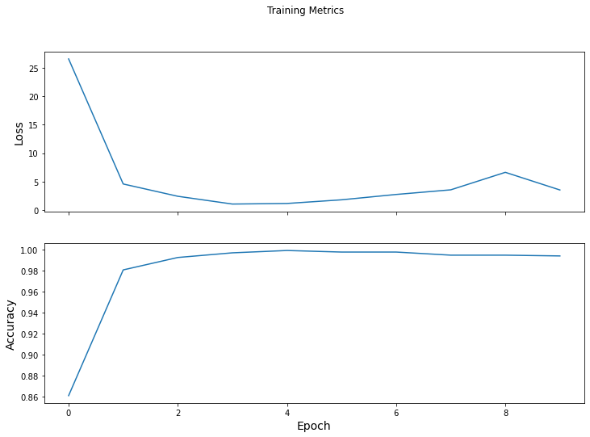
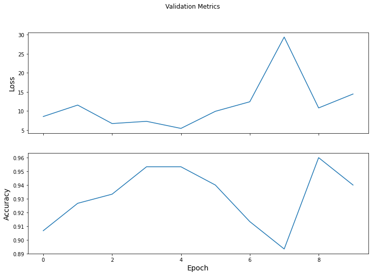

Clip Classifier¶
from IPython.display import display, HTML
from __future__ import absolute_import
from __future__ import division
from __future__ import print_function
import time
from graph_nets import utils_np
from graph_nets import utils_tf
from graph_nets import modules
import matplotlib.pyplot as plt
import numpy as np
import pandas as pd
import sonnet as snt
import tensorflow as tf
from data_processing_utils import *
from NLNN import *
SEED = 1
np.random.seed(SEED)
tf.random.set_seed(SEED)
Data¶
The dataset consists of fMRI time-series activations
300 ROIs: schafer 300 ROI parcellation,
176 participants,
each participant watches 15 movie clips.
videoclip_table = pd.read_csv("data/videoclip_tr_lookup.csv")
videoclip_table
| clipno_overall | run | clipno_in_run | clip_name | start_tr | stop_tr | |
|---|---|---|---|---|---|---|
| 0 | 1 | MOVIE1_7T_AP | 1 | twomen | 20.0000 | 264.0417 |
| 1 | 2 | MOVIE1_7T_AP | 2 | bridgeville | 284.0833 | 505.7083 |
| 2 | 3 | MOVIE1_7T_AP | 3 | pockets | 525.7500 | 713.7500 |
| 3 | 4 | MOVIE1_7T_AP | 4 | overcome | 733.7917 | 797.5417 |
| 4 | 5 | MOVIE1_7T_AP | 5 | testretest1 | 817.5833 | 900.9583 |
| 5 | 6 | MOVIE2_7T_PA | 1 | inception | 20.0000 | 246.7083 |
| 6 | 7 | MOVIE2_7T_PA | 2 | socialnet | 266.7500 | 525.3333 |
| 7 | 8 | MOVIE2_7T_PA | 3 | oceans | 545.3750 | 794.5833 |
| 8 | 9 | MOVIE2_7T_PA | 4 | testretest2 | 814.5833 | 897.9583 |
| 9 | 10 | MOVIE3_7T_PA | 1 | flower | 20.0000 | 200.5417 |
| 10 | 11 | MOVIE3_7T_PA | 2 | hotel | 220.5833 | 405.0833 |
| 11 | 12 | MOVIE3_7T_PA | 3 | garden | 425.1250 | 629.2083 |
| 12 | 13 | MOVIE3_7T_PA | 4 | dreary | 649.2500 | 791.7500 |
| 13 | 14 | MOVIE3_7T_PA | 5 | testretest3 | 811.5833 | 894.9583 |
| 14 | 15 | MOVIE4_7T_AP | 1 | homealone | 20.0000 | 252.2917 |
| 15 | 16 | MOVIE4_7T_AP | 2 | brokovich | 272.3333 | 502.1667 |
| 16 | 17 | MOVIE4_7T_AP | 3 | starwars | 522.2083 | 777.3750 |
| 17 | 18 | MOVIE4_7T_AP | 4 | testretest4 | 797.5833 | 880.9583 |
In our dataset, each data sample is represented as a graph
each ROI is a node, i.e. we have 300 nodes in the graph
attribute of each node is its entire time-series
all nodes are connected pair wise
there is no edge attribute
# Load dataset
X, X_len, clip_y, num_subjs, num_clips = get_data()
# Pad each time-series with zeros to equalize lengths
X = pad_data(X)
# Create graphs from data
prob_edge = 1.000
graphs_tuple = clip_graphs(X,
prob_edge=prob_edge)
# Convert clip labels to one-hot vectors
clip_y_oh = tf.one_hot(clip_y, num_clips).numpy()
# Train, validation, test split
num_train = 90 * num_clips
num_val = 10 * num_clips
num_test = 76 * num_clips
train_G, train_y, val_G, val_y, test_G, test_y = train_val_test_split(graphs_tuple,
clip_y_oh,
num_train,
num_val,
num_test,
num_clips,
num_subjs)
loading run 1/4
loading run 2/4
loading run 3/4
loading run 4/4
Model¶
# Create model
model = NLNNClassifer(num_nodes=300,
k_linear=16,
num_classes=num_clips)
# Define loss and gradient functions
loss_object = tf.keras.losses.CategoricalCrossentropy(from_logits=True)
def loss(model, x, y):
# training=training is needed only if there are layers with different
# behavior during training versus inference (e.g. Dropout).
y_ = model(x)
return loss_object(y_true=y, y_pred=y_)
def grad(model, inputs, targets):
with tf.GradientTape() as tape:
loss_value = loss(model, inputs, targets)
return loss_value, tape.gradient(loss_value, model.trainable_variables)
optimizer = tf.keras.optimizers.Adam(learning_rate=0.001)
Performance evaluation¶
Training/validation accuracy¶
train_loss_results = []
train_accuracy_results = []
val_loss_results = []
val_accuracy_results = []
template = ("Epoch {:03d}: "
"Train Loss: {:.3f}, "
"Train Accuracy: {:.3%}, "
"Validation Loss: {:.3f}, "
"Validation Accuracy: {:.3%}")
num_epochs = 10
batch_size = 8
for epoch in range(num_epochs):
train_loss_avg = tf.keras.metrics.Mean()
train_accuracy = tf.keras.metrics.CategoricalAccuracy()
val_loss_avg = tf.keras.metrics.Mean()
val_accuracy = tf.keras.metrics.CategoricalAccuracy()
# Training loop - using batches of <batch_size>
for i in range(0, num_train, batch_size):
# Optimize the model
x = utils_tf.get_graph(train_G, slice(i, i + batch_size))
y = train_y[i : i + batch_size, :]
loss_value, grads = grad(model, x, y)
optimizer.apply_gradients(zip(grads, model.trainable_variables))
# Track progress: Add current batch loss
train_loss_avg.update_state(loss_value)
# Compare predicted label to actual label
train_accuracy.update_state(y, model(x))
# Log training loss and accuracy
train_loss_results.append(train_loss_avg.result())
train_accuracy_results.append(train_accuracy.result())
# Validation loop
for i in range(0, num_val, batch_size):
x = utils_tf.get_graph(val_G, slice(i, i + batch_size))
y = val_y[i : i + batch_size, :]
logits = model(x)
# Track progress
val_loss_value = loss(model, x, y)
val_loss_avg.update_state(val_loss_value)
val_accuracy.update_state(logits, y)
# Log validation loss and accuracy
val_loss_results.append(val_loss_avg.result())
val_accuracy_results.append(val_accuracy.result())
if epoch % 1 == 0:
print(template.format(epoch,
train_loss_avg.result(),
train_accuracy.result(),
val_loss_avg.result(),
val_accuracy.result()))
Epoch 000: Train Loss: 26.554, Train Accuracy: 86.074%, Validation Loss: 8.571, Validation Accuracy: 90.667%
Epoch 001: Train Loss: 4.570, Train Accuracy: 98.074%, Validation Loss: 11.567, Validation Accuracy: 92.667%
Epoch 002: Train Loss: 2.408, Train Accuracy: 99.259%, Validation Loss: 6.732, Validation Accuracy: 93.333%
Epoch 003: Train Loss: 1.042, Train Accuracy: 99.704%, Validation Loss: 7.314, Validation Accuracy: 95.333%
Epoch 004: Train Loss: 1.143, Train Accuracy: 99.926%, Validation Loss: 5.460, Validation Accuracy: 95.333%
Epoch 005: Train Loss: 1.788, Train Accuracy: 99.778%, Validation Loss: 9.934, Validation Accuracy: 94.000%
Epoch 006: Train Loss: 2.728, Train Accuracy: 99.778%, Validation Loss: 12.433, Validation Accuracy: 91.333%
Epoch 007: Train Loss: 3.541, Train Accuracy: 99.481%, Validation Loss: 29.370, Validation Accuracy: 89.333%
Epoch 008: Train Loss: 6.617, Train Accuracy: 99.481%, Validation Loss: 10.819, Validation Accuracy: 96.000%
Epoch 009: Train Loss: 3.515, Train Accuracy: 99.407%, Validation Loss: 14.463, Validation Accuracy: 94.000%
# Training metrics
fig_tr, axes = plt.subplots(2, sharex=True, figsize=(12, 8))
fig_tr.suptitle('Training Metrics')
axes[0].set_ylabel("Loss", fontsize=14)
axes[0].plot(train_loss_results)
axes[1].set_ylabel("Accuracy", fontsize=14)
axes[1].set_xlabel("Epoch", fontsize=14)
axes[1].plot(train_accuracy_results)
plt.show()
# Validation metrics
fig_val, axes = plt.subplots(2, sharex=True, figsize=(12, 8))
fig_val.suptitle('Validation Metrics')
axes[0].set_ylabel("Loss", fontsize=14)
axes[0].plot(val_loss_results)
axes[1].set_ylabel("Accuracy", fontsize=14)
axes[1].set_xlabel("Epoch", fontsize=14)
axes[1].plot(val_accuracy_results)
plt.show()


Testing accuracy¶
test_accuracy = tf.keras.metrics.CategoricalAccuracy()
for i in range(0, num_test, batch_size):
x = utils_tf.get_graph(test_G, slice(i, i + batch_size))
y = test_y[i : i + batch_size, :]
logits = model(x)
test_accuracy.update_state(logits, y)
print("Test set accuracy: {:.3%}".format(test_accuracy.result()))
Test set accuracy: 92.895%